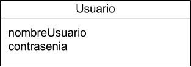

{% extends "base.html" %}
{% block content %}
{% if session['logged_in'] %}
Base de datos
Una base de datos es un conjunto de datos pertenecientes a un mismo contexto y almacenados sistemáticamente para su posterior uso.
En este caso no fue necesaria mas que la relacion "Usuario".

{% else %}
Sin autenticar!
{% endif %}
{% endblock %}